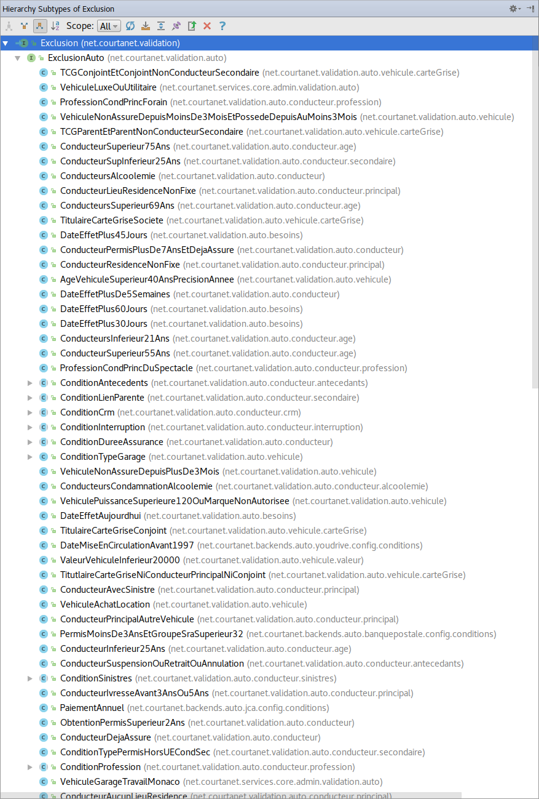

DSL.using(java)
.toGoBeyond(BeanValidation)
.at(SoftShake.eq(ch));
Welcome to the Furets !
@dubreuia – Alexandre Dubreuil
- Québécois exilé à Paris depuis 2009
- Software Architect at LesFurets.com
@gdigugli – Gilles Di Guglielmo
- Designer of sweet cooked software since 1999
- Software Architect at LesFurets.com
- 1 website, 5 Insurance Products : Car, Health, Home, Bike, Loan
- 1 codebase, 450k lines of code, 60k unit tests, 150 selenium tests
- 22 Developers, 2 DevOps, 4 Architects
- 19 production servers including Load balancers, Frontend, Backend, Databases, BI
- 1 release per day
- 9 years of code history
- 3M quotes/year, 40% of market share, 4M of customers
Fluent API
Java c'est verbeux, mais on peut réduire le bruit et s'approcher du langage naturel avec un Fluent API
// JUnit API
assertEquals(9, fellowshipOfTheRing).hasSize(9));
assertTrue(fellowshipOfTheRing.contains(frodo, sam));
assertTrue(fellowshipOfTheRing.doesNotContain(sauron));
// AssertJ API (fluent)
assertThat(fellowshipOfTheRing).hasSize(9)
.contains(frodo, sam)
.doesNotContain(sauron);
Fluent API
Plusieurs nouveaux idiomes depuis Java 8 nous facilitent la tâche (streams, lambdas, etc.)
// java.time API
Instant.ofEpochMilli(milli).atZone(ZoneId.systemDefault()).toLocalDateTime()
Plusieurs librairies populaires fournissent des API fluent : jOOQ, AssertJ, Apache Spark, etc.
Dataset<Row> averagePrice = prices
.filter(value.<String>getAs("insurer").equals("COOL insurer"))
.groupBy("product")
.agg(avg("price").as("average"))
.orderBy(desc("average"));
Fluent API : motivation 1
model-map : Mapping bijectif typé de clef / valeur / modèle. Utilisé chez LesFurets comme dictionnaire front, pour notre modèle de donnée C*, etc.
// Domain model to map
FieldModel model = new SampleModelWrapper(sampleModel1);
Map<FieldId, Object> map = model.stream().collect(toMap(Entry::getKey, Entry::getValue));
System.out.println(map.get(EMAIL));
// Map to domain model
SampleModelWrapper sampleModel2 = map.entrySet().stream()
.collect(SampleModelWrapper.toFieldModel());
System.out.println(sampleModel2.getModel().getAccount().getEmail());
Fluent API : motivation 2
Utilisation de jOOQ (Java Object Oriented Query) dans notre code base, soit un modèle de colonne exprimé avec un DSL (Domain Specific Language) permettant de générer du SQL
DSL.using(conn)
.selectFrom(BO_INSURANCE)
.where(BO_INSURANCE.STATUS.equal(CONFIRMED.getCode()))
.stream()
.map(InsuranceDAO::InsuranceDto)
.collect(toList());
Fluent API : motivation 3
Exclusions assureurs sur le modèle objet (code historique endetté)
public void check(FieldContext context, FormuleMoto formule, Conducteur conducteur,
Vehicule vehicule, Void unused, Besoins besoins,
Set<EAbTestingScenario> scenarios)
throws ExclusionException {
if (besoins == null) {
return;
}
if (besoins.getDateDebutContrat() == null) {
return;
}
if (!DateHelper.isAfter(besoins.getDateDebutContrat(),
DateHelper.ajouteJoursADate(DateHelper.getToday(), NBR_JOURS),
DateHelper.EPrecision.jour)) {
throw new ExclusionException(DATE_EFFET_PLUS_60_JOURS);
}
}
Fluent API : motivation 3
public ExclusionRule exclusionRule() {
return DSL.when(dateContrat().after(todayPlusDays(60)))
.excludeFormules()
.withMessage(DATE_EFFET_PLUS_60_JOURS)
.exclusionRule();
}
DSL
"A domain-specific language (DSL) is a computer language specialized to a particular application domain. This is in contrast to a general-purpose language (GPL), which is broadly applicable across domains"
Avec model-map, on crée un DSL pour nos exclusions assureurs, en s'inspirant de jOOQ
Pourquoi un DSL ?
compliance : les règles correspondent aux cahiers des charges
gouvernance : catalogue de règles correctement nommées
auditabilité : valider les règles grâce à l'AST
Exclusions assureurs
Hiérarchie de 492 classes endettées, aucune gouvernance ni auditabilité
Model-map

Live code model-map : accesseurs du modèle
public class Account extends Identity {
@SamplePath(field = SampleFieldId.LOGIN, readable= "account login")
private String login;
@SamplePath(field = SampleFieldId.PASSWD, readable = "account password")
private String password;
}
Design du DSL
Point d'entré org.modelmap.core.dsl.DSL#when(StepCondition), opération terminale StepWhen#validate permet de retourner la règle
DSL.when(EMAIL.matches("\\w+[@]\\w+\\.com")
.or(EMAIL.matches("\\w+[@]\\w+\\.fr")))
.validate()
.withMessage("email finishes with .com or .fr");
Design du DSL
Une règle lisible est disponible avec ValidationRule#readable
System.out.println(EMAIL_VALID.readable());
> When (email matches \w+[@]\w+\.com or email matches \w+[@]\w+\.fr)
> validate with message "email finishes with .com or .fr"
Pour exécuter la règle il faut appeler ValidationRule#executeOn(FieldModel)
rules.stream()
.map(rule -> rule.executeOn(model))
.filter(Result::isInvalid)
.map(Result::message)
.collect(toList());
Design de l'AST
"In computer science, an abstract syntax tree (AST), or just syntax tree, is a tree representation of the abstract syntactic structure of source code written in a programming language"
TODO diagram
public class Personne implements Serializable {
@CoordonneesPath(field = COORD_NOM, constraint = SOUSCRIPTEUR)
protected String nom;
@CoordonneesPath(field = COORD_PRENOM, constraint = SOUSCRIPTEUR)
protected String prenom;
@AutoPath(field = PRINCIPAL_SEXE, constraint = PRINCIPAL)
@AutoPath(field = SECONDAIRE_SEXE, constraint = SECONDAIRE)
@EmprunteurPath(field = EMPRUNTEUR_SEXE, constraint = EMPRUNTEUR)
@EmprunteurPath(field = COEMPRUNTEUR_SEXE, constraint = COEMPRUNTEUR)
private ESexe sexe;
@AutoPath(field = PRINCIPAL_NAISSANCE, constraint = PRINCIPAL)
@AutoPath(field = SECONDAIRE_NAISSANCE, constraint = SECONDAIRE)
@EmprunteurPath(field = EMPRUNTEUR_NAISSANCE, constraint = EMPRUNTEUR)
@EmprunteurPath(field = COEMPRUNTEUR_NAISSANCE, constraint = COEMPRUNTEUR)
private String dateNaissance;
}
Live code 1 : convertir en DSL
public static boolean validateCountry(Account account) {
if (account == null) {
return true;
}
if (account.getCountry() == null) {
return true;
}
if (account.getLanguage() == null) {
return true;
}
if (account.getPhoneNumber() == null) {
return true;
}
if (account.getCountry().equals(Country.FR)
&& account.getLanguage().equals(Language.FR)
&& account.getPhoneNumber().startsWith("+33")) {
return true;
}
if (account.getCountry().equals(Country.UK)
&& account.getLanguage().equals(Language.EN)
&& account.getPhoneNumber().startsWith("+45")) {
return true;
}
return false;
}
JMH
Benchmark Mode Samples Mean Mean error Units
o.m.BenchmarkOldRule.valid_email thrpt 25 1860.553 42.269 ops/ms
o.m.BenchmarkRule.valid_email thrpt 25 1733.465 18.461 ops/ms
Le DSL est aussi performant qu'une règle POJO
vs Bean validation
Bean validation exprime aussi des contraintes sur un modèle, TODO vs DSL
- TODO DSL pour grappe d'objet
DSL : Gouvernance des règles
Utilisation du registry et du readable afficher les règles par groupe
Registry.ACCOUNT.stream()
.map(ValidationRule::readable)
.forEach(System.out::println);
When (account email matches \w+[@]\w+\.com or account email matches \w+[@]\w+\.fr),
validate with message "email finishes with .com or .fr"
When (match any [((account country equals FR and ...),
((account country equals UK and ...)]),
validate with empty message
DSL : Expressivité
Expression des règles en langage naturel
DSL.when(emprunteurNaissance().ageAt(pretDateDeblocage()))
.greaterOrEqual(90))
.excludeFormules()
.exclusionRule();
DSL : AST
L'AST permet d'afficher la règle de manière structuée et de montrer le noeud évaluant à false
When (match any [((account country equals FR and account language equals FR) and account phone number starts with +33), ...]), validate with empty message
Model-Map et DSL disponibles sur Github
TODO
- http://github.com/lesfurets/model-map
- Framework et exemples
- Apache Licence
- Essayez et contribuez !